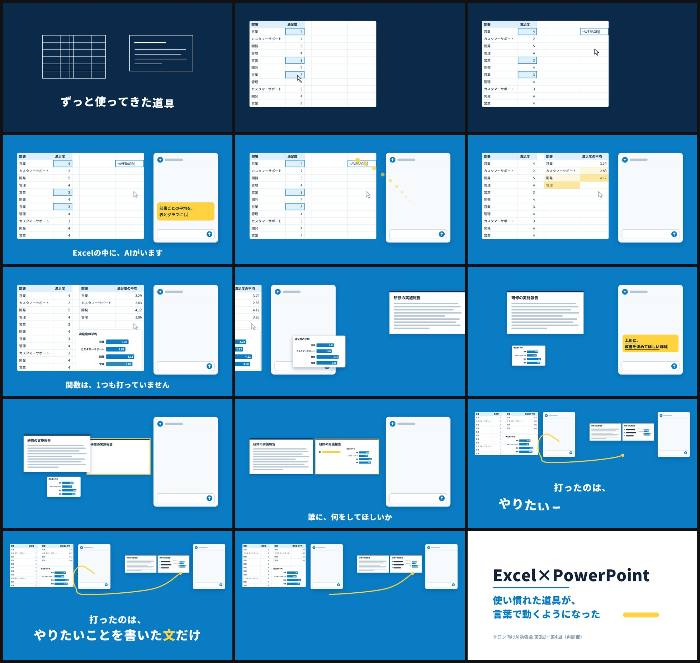

使い慣れた道具が、言葉で動くようになった
黄色は言葉です。打った一文が道具の中に流れ込むと、手で動かしていたマス目やスライドが、自分から動き出します。勉強会のスライドの順番はなぞらず、回の趣旨「使い慣れた道具が、言葉で動くようになった」を1つの比喩にしました。
| 0–2 | 道具 | 表のマス目とスライドの枠が、白い線で描かれる。「ずっと使ってきた道具」 |
| 2–5 | 手で動かす | カーソルがマスを1つずつ選び、「=AVERAGE(」と打ちかけて止まる |
| 5–9 | 中にいる | 表の横に入力欄が開く。「Excelの中に、AIがいます」。黄色い一文を打つ |
| 9–14 | 言葉で動く | 一文が光になって表に流れ込む。マスがひとりでに埋まり、横棒グラフが1本ずつ伸びる。「関数は、1つも打っていません」 |
| 14–16 | 運ぶ | グラフの写しが浮き、画面が横に流れてスライドへ |
| 16–21 | 誰に、何を | 「上司に、改善を決めてほしい資料です」と打つ。元の1枚は残ったまま、新しい1枚が増え、グラフが収まる |
| 21–25 | 引く | 表とスライドの間を、黄色い線が1本通っている。「打ったのは、やりたいことを書いた文だけ」 |
| 25–30 | タイトル | 線が点にまとまり、白い円が広がってタイトルへ。最後の2秒は静止 |

映像はHTML Canvasで「時刻tのとき画面はこう」という関数として書き、Playwright（Chromium）で120fpsの連番画像を書き出して、ffmpegで60fpsのMP4にまとめました。絵コンテ、静止画の確認、書き出しの順に進めています。ソースは live.html と src/ にあります。制作はClaude Code。